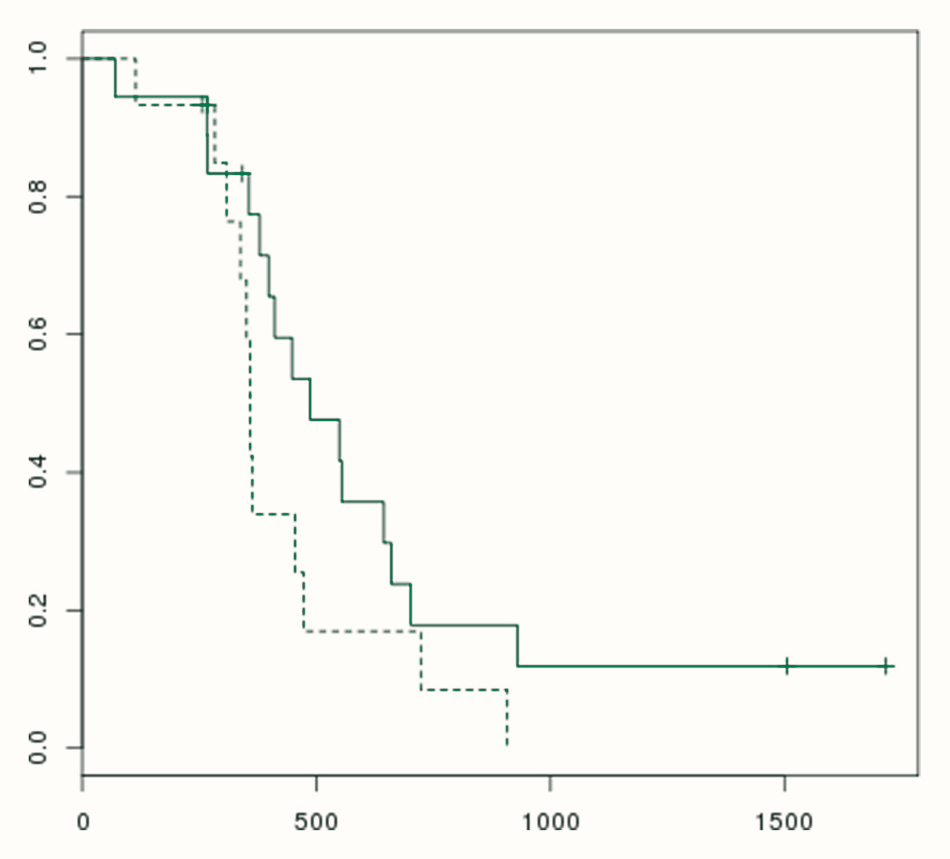

Fig. 5 came back the same.
We dig up old papers and get their figures back.
Two papers dug up so far.

Two papers, figure by figure
Newest first. One agrees with its paper, one partly.
| Published | Analyzed | Paper | What we lost | What we recovered | Verdict |
|---|---|---|---|---|---|
| PMC4247685 A framework for generalized subspace pattern mining in high-dimensional datasets Curry, BMC Bioinformatics ResultsCode analysisGitHub |
|
|
Partly agreesFigs 3 and 4 running | ||
| PMC4081639 An efficient algorithm for accurate computation of the Dirichlet-multinomial log-likelihood function Yu and Shaw, Bioinformatics ResultsCode analysisGitHub |
|
|
Agrees |